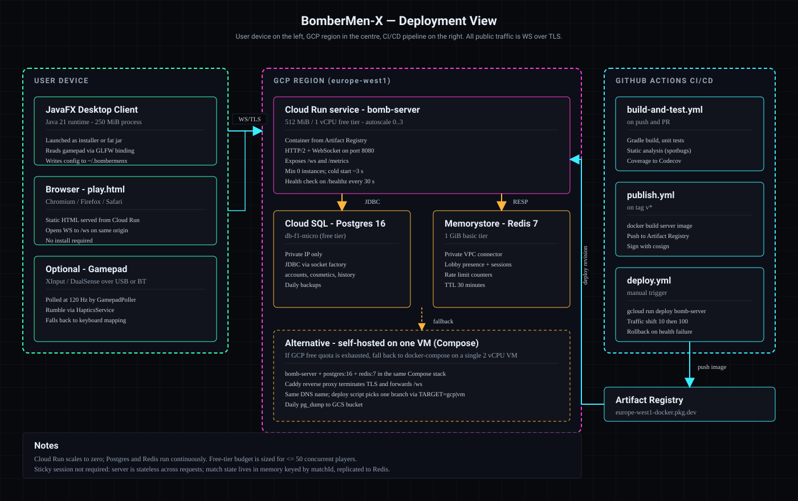

Deployment & Sequence Diagrams
Operational and behavioural views of the BomberMen-X system: where the bits run, and how key interactions unfold in time. The deployment diagram shows the Cloud Run topology and CI/CD path; the two sequence diagrams trace the most important live flows — bomb lifecycle and match start.
Deployment topology

bomberman-server container, which talks to
Cloud SQL (Postgres 16) for durable state and Memorystore (Redis 7) for ephemeral state. CI/CD on the
right pushes signed images to GHCR and deploys via gcloud run deploy.
Sequence — bomb placement to explosion

PlaceBomb intent;
the server validates, mutates GameWorld, advances the fuse on each tick, and finally
broadcasts the snapshot containing the spawned Explosion and any resulting
KillFeedEntry.
Sequence — Hello to MatchStart

Hello is verified by the AuthRegistry provider chain. Once the lobby
is full or the ready timer fires, MatchManager.create instantiates a
MatchSession and broadcasts MatchStart to every participating client.